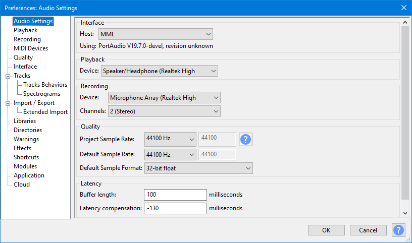

Audio Settings Preferences
- Accessed by: (on a Mac )
- 
- Image of Audio Settings Preferences showing default settings for Host and Channels.
Interface
Selects the particular host interface with which Audacity communicates with your chosen playback and recording devices.
Windows: on Windows the choice is between the following host audio interfaces:
- MME: This is the Audacity default and the most compatible with all audio devices.
- Windows DirectSound: This is more recent than MME with potentially less latency.
- Windows WASAPI: This host is the most recent Windows interface between applications (such as Audacity) and the audio interface driver. WASAPI was first officially released in 2007. WASAPI is particularly useful for "loopback" recording of computer playback. 24-bit recording devices are supported using this host. Playback is usually emulated. As a result, the playback slider in the Playback Meter will only scale the system playback slider's current level up or down rather than directly manipulating that system slider.
- Windows DirectSound may by default have only slightly lower latency than MME.
- Selecting Windows DirectSound or Windows WASAPI and enabling both "Exclusive Mode" boxes in Windows Sound allows Audacity to request audio direct from the device without resampling.
Mac: On Mac the only choice is Core Audio.
Linux: On Linux there is often only one option: ALSA. Other options could be OSS and/or Jack Audio Connection Kit (also known as "Jack" or "Jackd").
Playback
- Device: Selects the device used for playback.
Recording
- Device: Selects the device used for recording.
- Channels: 1 (Mono), 2 (Stereo) or the number of channels that are provided by the drivers of your sound device. On most inbuilt sound devices, especially on Windows, only mono or stereo will be available. For some devices on Windows, choosing Windows DirectSound in "Host" above may be more likely to reveal options for recording more than two channels. On some devices capable of recording more than two channels, an explicit "multi" device may appear in the "Device" dropdown for recording all the channels simultaneously.
Quality
This panel sets the Project Sample Rate, Default Sample Rate and Default Sample Format. It is strongly recommended that you stick with the default settings.
- Project Sample Rate: This is used by Audacity in the current project when recording new tracks and for playback, mixdowns and exports from the project. The Project Sample Rate is stored with your project when you save the project.
- Project Sample Rate: This is used by Audacity when recording new tracks and for playback, mixdowns and exports in the project. The Project Sample Rate is stored with your project when you save the

Project Rate may change when importing initial audio file: - When importing a file into an empty project window or when using ), the Project Rate control in Audio Settings Preferences changes if necessary to reflect the rate of the file.
- The Project Sample Rate determines the sample rate a file will be exported at, so no further adjustment is needed to export that file at its original rate.
- There is no warning given that this rate change occurs.
- However, once there is already an audio track in the project (either an imported file, a recording or generated audio), importing an audio file will not change the project rate.
- Default Sample Rate: This just sets the Sample Rate which will be used each time Audacity is launched and also when a new project window is opened. It offers a choice of 13 Sample Rates.
Generally you will want to use the default value of 44100 Hz, which can can reproduce all frequencies that humans can hear (up to 22050 Hz) and is the standard for audio CDs. To choose some other bespoke rate, click "Other..." in the dropdown and type your rate into the box to right of the dropdown.
Sample rates between 44100 Hz and 96000 Hz can produce higher quality but the quality benefits are increasingly small compared to rapidly increasing consumption of disk space and increasing risk of recording dropouts on slower computers. 192000 Hz music recordings could have ultrasonic playback distortion that make them inferior to recordings at lower rates. Very high rates do have some specialized uses such as ultrasonic wildlife recordings and high-speed tape capture.
- Default Sample Format: This sets the Sample Format (bit depth) which will be used each time Audacity is launched, or each time a new project window or track is opened. It offers a choice of three sample formats or bit-depths. This affects both imported and newly recorded material, either in a new or existing project (even if the other audio in an existing project is at some other quality).
A changed setting also acts immediately on the current project, affecting any subsequent new tracks you record.
The current Sample Format is NOT stored with the project for re-use the net time you open the project
The default 32-bit float resolution gives the highest quality of the three choices, but takes twice the storage space on disk compared to 16-bit resolution.

It is strongly recommended that you work with this at the default 32-bit float resolution if you have sufficient available disk space.
OGG will always import at 16-bit resolution using the standard OGG Vorbis importer, irrespective of Default Sample Format. This is due to the design of the OGG codec. However OGG can be imported at 32-bit resolution using FFmpeg, as described at Using the file type dropdown menu on the Importing Audio page.
Latency
- Buffer length: A "buffer" is a chunk of audio waiting for the computer to process it. At the default 100 milliseconds (ms) setting, the audio will take 0.1 seconds to travel through the audio interface when recording or playing. Decreasing this value means recordings will be laid down on disk with less latency, and playback may respond faster. However, the computer will have to work faster so that it is ready to process the shorter chunks as soon as required. Setting this value too low (for example to 1 ms) will mean the computer will not be able to keep up, and neither recording or playback will work. 100 ms is a safe setting for most computers.
Settings below 20ms, or 30 ms if you are using the Audacity default MME host, may cause you to get clicky playback. - Latency compensation: When recording, it takes a small amount of time for the sound to be converted to digital data and written to the track. This time delay is the \xe2\x80\x9crecording latency\xe2\x80\x9d and is typically around 130 ms (0.13 seconds) for consumer level equipment. By compensating for this delay, sounds are written to the track at the correct time relative to the Timeline, and other tracks in the project. The actual amount of delay depends on the hardware and audio settings, so for accurate synchronization in multi-track recording, this setting should be calibrated as described in the Latency Test page.
See Latency Test for details on how to adjust latency on you computer set-up. Alternatives
Audio Setup Toolbar
As an alternative to using Devices Preferences, you can make and change all the same settings with Audio Setup Toolbar.
Device Toolbar
With Device Toolbar you can make and change most of the same settings with the exception of the Quality and Latency settings.
Note that he Device Toolbar is NOT displayed by default in Audacity. To enable it, click on and check on Device Toolbar.
- When importing a file into an empty project window or when using ), the Project Rate control in Audio Settings Preferences changes if necessary to reflect the rate of the file.